【零到全栈】4.6 - Next.js 项目的两种部署方式：静态导出与常驻服务
在上一节中，我们成功将 React 单页应用重构升级为 Next.js 生产级框架，并探索了基于文件系统的 App Router 路由与服务端组件（RSC）。然而，在准备将项目推向公网生产服务器时，开发者往往会面临一个核心分水岭：Next.js 项目到底该如何部署上线？
上一节结尾留下的一个细节是：next build 生成的 .next/ 目录结构十分庞杂，无法像过去 Vite 打包生成的 dist/ 一样直接扔给 Nginx。
本章将系统对比 Next.js 的两种主流上线形态——常驻 Node.js 动态服务（方案 A） 与 纯静态导出（方案 B），并带大家在真实 Ubuntu 服务器上实操静态导出（output: 'export'）、配置 Nginx 的 URL 重写规则（try_files $uri.html），最后深入探讨为什么在 AI 全栈开发中，“静态前端 + 独立后端 API”是比“Next.js 单体全栈”更可靠、更经典的架构方案。
为什么 .next 目录不能直接交给 Nginx
(参考时间: 01:29)
执行 npm run build 后，观察根目录下生成的 .next/ 目录：
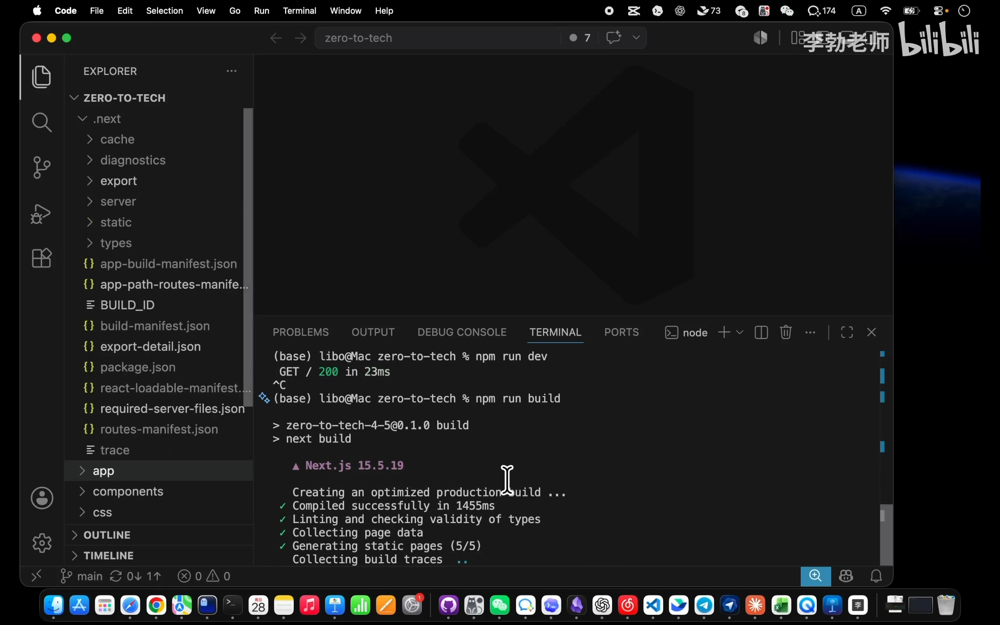
📷 查看 .next 目录结构
在 B 站中打开 (00:01:29)
打开该目录会发现，虽然在 .next/server/app/ 下确实存在 index.html 与 text-lab.html，但整个目录结构极其凌乱：
- 静态 CSS 与客户端 JS 散落于各级哈希子目录中，并非标准 Web 根目录规范。
- 包含了大量的运行时配置文件、路由清单（manifests）以及专供 Node.js 服务端加载的模块。
这是因为：默认的 .next 产物根本不是一个现成的静态网站，而是供 next start 常驻服务消费的“运行时半成品”。
flowchart TD
Build["执行 next build"] --> Raw[".next/ 产物目录 (运行时半成品)"]
Raw -.->|无法直接解析| NginxFail["Nginx 静态文件托管 (404 / 缺少映射)"]
Raw -->|正确管道| NodeServer["常驻服务：next start (Node.js 运行时进程)"]
方案对比：常驻服务 (A) vs 静态导出 (B)
(参考时间: 04:42)
面对 Next.js 项目上线，工程上有两条明确的分支路线：
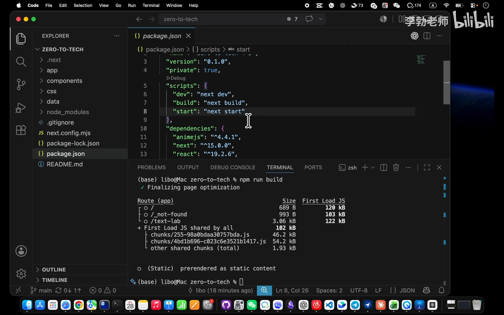
📷 PPT讲解方案A常驻服务动态渲染动画
在 B 站中打开 (00:04:42)
1. 方案 A：常驻 Node.js 服务（SSR 动态模式）
- 工作方式：在服务器后台运行
next start（通常由 PM2 或 Docker 守护），7×24 小时常驻一个 Node.js 进程。 - 执行流程：每个用户 HTTP 请求抵达服务器时，由常驻的 Node 进程根据用户身份、Cookie 或动态参数，在服务端现场即时拼装渲染出定制化的 HTML 并返回。
sequenceDiagram
autonumber
actor User as 用户浏览器
participant Node as 常驻 Next.js 服务 (Node.js)
participant DB as 数据库 / 内部服务
User->>Node: 1. 发起请求 GET /profile (携带 Cookie/Token)
Node->>DB: 2. 读取当前用户个性化数据
DB-->>Node: 返回私有业务数据
Node->>Node: 3. 服务端现拼专属 HTML (RSC 运行时渲染)
Node-->>User: 4. 返回完整且个性化的 HTML
- 核心优势：极致的灵活性，页面内容完全按请求动态计算，且能保障 SEO。
- 代价与短板：
- 必须维护一个常驻 Node 进程，占用 CPU 与内存开销较重。
- 需要考虑 Node.js 进程崩溃重启、内存泄漏及容器运维成本。
2. 方案 B：纯静态导出（Static Export 模式）
- 工作方式：在
next.config.mjs中声明output: 'export'。构建时，Next.js 会把每一个页面提前完整渲染成独立的静态 HTML 文件，连同 CSS/JS 打包入干净的out/目录。 - 执行流程：服务器上无需安装 Node.js 运行时或启动常驻进程，直接由高性能的 Nginx 反向代理或静态服务器读取并分发文件。
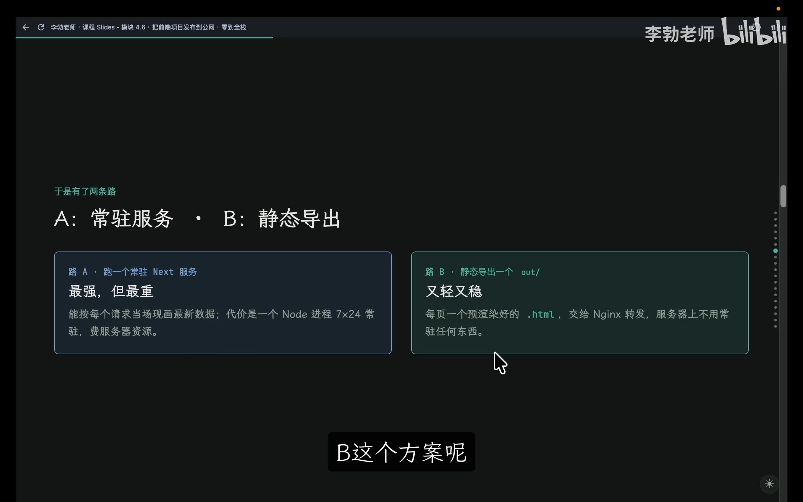
📷 PPT对比方案A与方案B
在 B 站中打开 (00:07:03)
| 维度对比 | 方案 A：常驻 Node.js 服务 | 方案 B：静态导出 (output: 'export') |
|---|---|---|
| 服务器端运行进程 | 常驻 Node.js 服务 (next start) |
仅需 Nginx（无需常驻后端服务） |
| 页面生成时机 | 用户每次请求时即时渲染 (SSR) | 编译构建时提前渲染 (SSG) |
| 服务器资源占用 | 较高（消耗内存与算力） | 极低（纯静态文件 I/O，抗高并发） |
| 动态内容处理方式 | 服务端现场拼装直接输出 | 前端静态页面秒开 + 浏览器异步调用 API |
| 适用场景 | 电商大促、个性化流媒体、高频变动强 SEO 站点 | 企业官网、个人博客、文档站、前后端分离 Web 应用 |
3. 动态数据在静态架构下的破局：“静态前端 + 后端 API”
许多开发者误以为“选了静态导出就无法做动态业务（如登录、情感分析、打分）”。事实上，绝大多数动态业务场景均采用 “静态前端骨架秒开 + 客户端向后端 API 异步索取数据” 的经典模式：
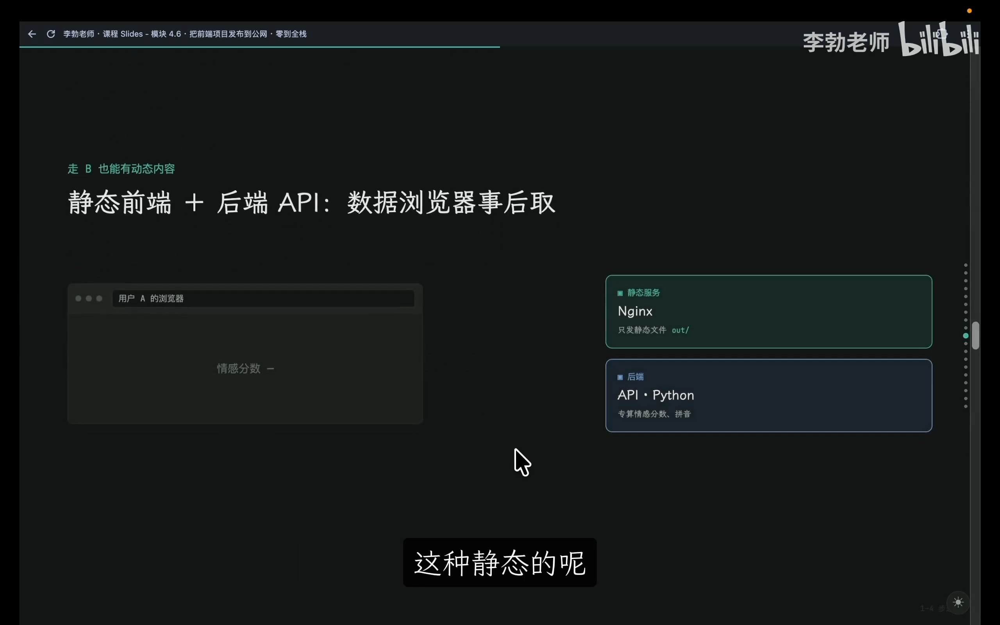
📷 PPT讲解静态前端+后端API交互动画
在 B 站中打开 (00:09:04)
sequenceDiagram
autonumber
actor User as 用户浏览器
participant Nginx as Web 服务器 (Nginx)
participant API as 独立后端服务 (Python / FastAPI)
User->>Nginx: 1. 请求前端页面 GET /text-lab
Nginx-->>User: 返回预渲染好的静态 HTML + 静态资源 (毫秒级响应)
Note over User: 2. 浏览器完成首屏渲染，显示输入框与交互界面
User->>API: 3. 用户输入文本并点击分析，发起异步 POST /api/analyze
API-->>User: 4. 返回计算结果 JSON {"sentiment": 0.95, "pinyin": "..."}
Note over User: 5. 客户端局部重绘，更新展示卡片
对于本课程的 zero-to-tech 项目，选用 方案 B（静态导出） 是最优解：架构极轻、极致稳定，且与下一阶段引入的 Python 后端 API 完美契合。
静态导出配置与构建验证
(参考时间: 11:39)
1. 修改 next.config.mjs
在项目根目录下打开配置文件 next.config.mjs，添加 output: 'export' 声明：
/** @type {import('next').NextConfig} */
const nextConfig = {
output: 'export', // 声明静态导出模式
};
export default nextConfig;
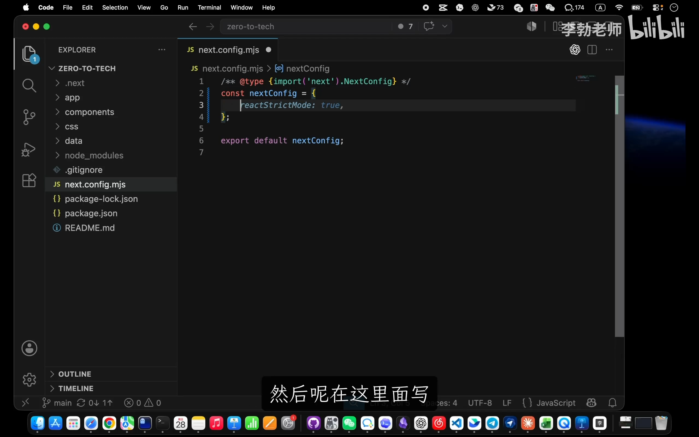
📷 next.config.mjs 添加 output export
在 B 站中打开 (00:11:39)
该配置明确告知 Next.js：放弃构建专供 next start 消费的半成品，在编译期将全站页面预渲染为纯静态文件，并统一收纳到 out/ 文件夹中。
2. 本地构建与产物审查
执行构建命令：
npm run build
构建完成后，根目录下生成了一个纯净的 out/ 目录：
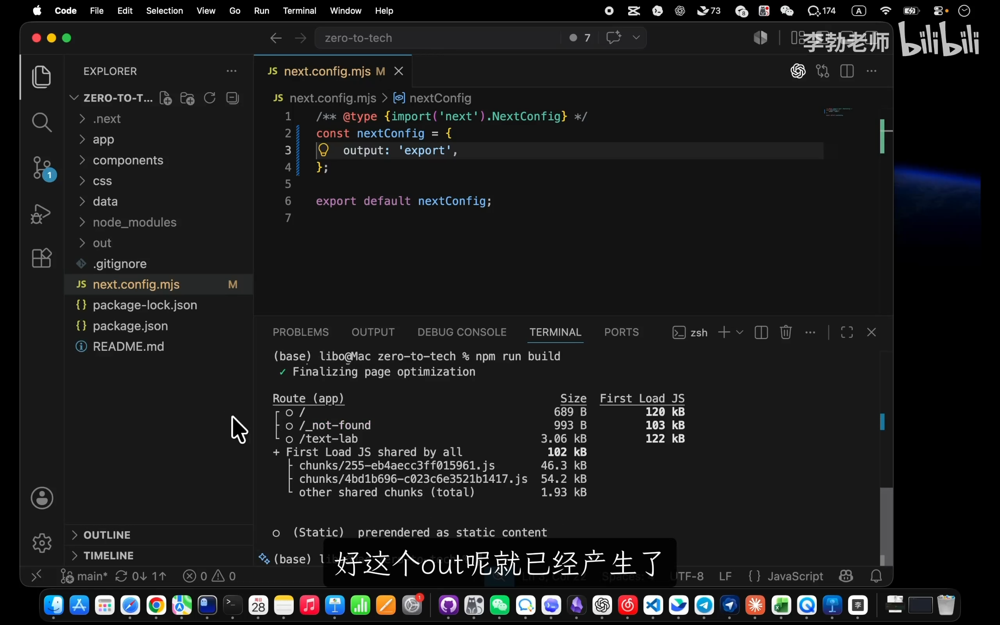
📷 构建生成 out 目录结构
在 B 站中打开 (00:12:22)
out/
├── _next/
│ └── static/ # 打包压缩后的 CSS 与 JS 静态资源
├── index.html # 首页静态 HTML
├── text-lab.html # /text-lab 静态 HTML
├── 404.html # 静态 404 兜底页
└── favicon.ico
[!TIP]
out/目录属于本地构建产物，已在.gitignore中被忽略，切勿将其提交入 Git 仓库。生产部署时，应在云服务器端拉取源码后现场执行npm run build生成out/。
服务器部署与 Nginx 规则重写
(参考时间: 14:07)
1. 提交配置并推送到云端
在本地完成 Git 提交并推送至 GitHub：
git add next.config.mjs
git commit -m "支持静态构建"
git push origin main
SSH 登录远程 Ubuntu 云主机，进入项目目录执行更新与构建：
cd /home/ubuntu/zero-to-tech
git pull origin main
npm install
npm run build
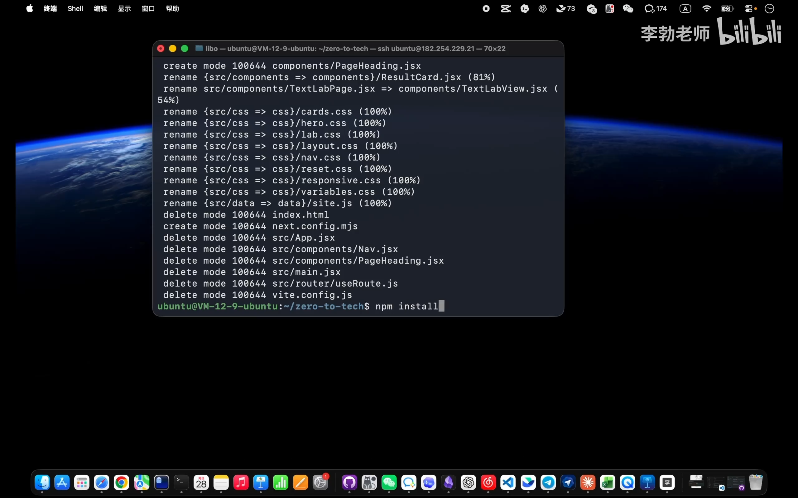
📷 服务器上拉取并构建 out
在 B 站中打开 (00:14:07)
确认服务器磁盘上已成功生成 /var/www/zero-to-tech/out 静态产物目录。
2. 配置 Nginx：优雅支持 Clean URLs（$uri.html）
在旧版配置中，Nginx 指向的是 Vite 生成的 dist/，且未能识别无扩展名的路由。我们编辑 Nginx 站点配置：
sudo vim /etc/nginx/sites-available/default
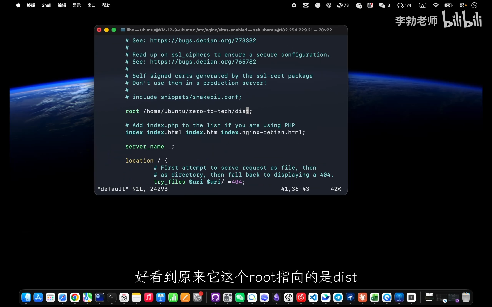
📷 编辑 nginx 配置文件 default
在 B 站中打开 (00:15:09)
核心修改如下：
server {
listen 80;
server_name _;
# 1. 将根目录重定向至 Next.js 静态导出的 out 目录
root /home/ubuntu/zero-to-tech/out;
index index.html;
location / {
# 2. 核心路由回退匹配规则
try_files $uri $uri.html $uri/ /index.html;
}
}
关键技术点拆解：$uri.html 的作用
- 当用户在浏览器输入
http://your-server-ip/text-lab时，$uri 的值即为/text-lab。 - 磁盘上的
out/目录下并没有名为text-lab的无后缀文件或文件夹，只有text-lab.html。 - 如果规则仅写
try_files $uri $uri/，Nginx 就会判定文件不存在而触发 404。 - 增加
$uri.html匹配项后，Nginx 会自动在磁盘寻找text-lab.html，成功读取并返回给用户，同时地址栏仍保持优雅的无后缀展示（Clean URL）。
3. 配置检验与平滑重载
保存配置后，执行语法测试并重载服务：
sudo nginx -t
sudo systemctl reload nginx
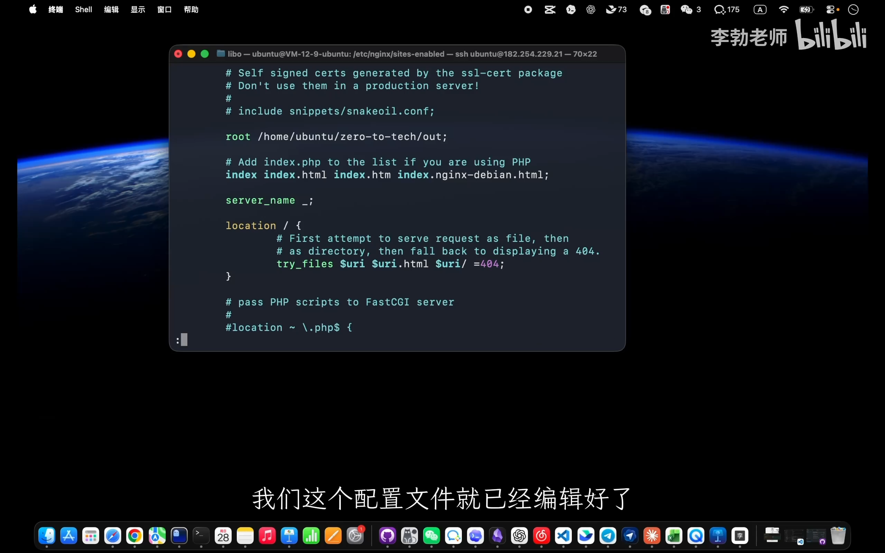
📷 nginx -t 与 reload 重载服务
在 B 站中打开 (00:16:39)
4. 浏览器验证与抓包检验
在浏览器中直接输入 http://your-server-ip/text-lab 刷新访问：
1. 页面正常呈现：404 彻底消除，直达目标页面。
2. 首屏内容即时可见：打开开发者工具 Network 面板，查看第一个 text-lab HTML 请求的响应体，完整且结构化的 HTML 内容已包含在内，无需等待 JavaScript 客户端二次运算。
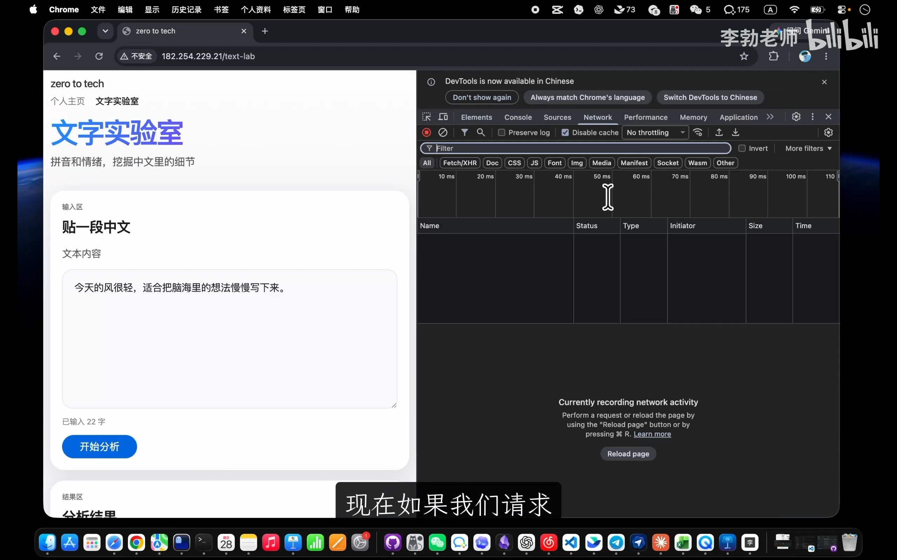
📷 浏览器首包直接拿到完整 HTML 验证
在 B 站中打开 (00:17:28)
架构深思：为什么不做“Next.js 单体全栈”
(参考时间: 21:54)
随着 Next.js 的演进，社区开始大量推崇“Next.js 单体全栈”——即在同一个 Next 项目中，利用 Route Handlers 和 Server Actions 直接连接数据库与编写业务逻辑。
然而在工业界与本课程体系中，我们坚决选择 “静态前端 + 独立后端 API” 的解耦路线：
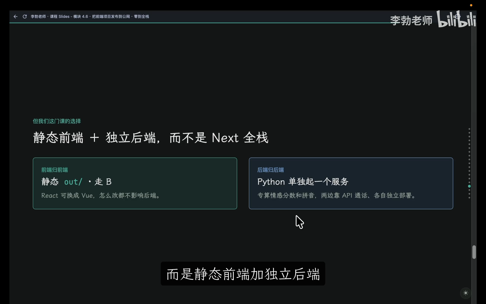
📷 PPT展示静态前端+独立后端架构模式
在 B 站中打开 (00:21:54)
graph LR
subgraph Client["用户端"]
Browser["浏览器 (静态页面 + 客户端 JS)"]
end
subgraph StaticFront["前端静态托管 (Nginx)"]
N1["out/index.html"]
N2["out/text-lab.html"]
N3["out/_next/static/"]
end
subgraph BackEnd["独立后端 API (Python / FastAPI)"]
API1["POST /api/analyze (NLP计算)"]
API2["POST /api/pinyin (分词与注音)"]
DB[(数据持久化 / SQLite)]
end
Browser -->|1. 加载静态文件| StaticFront
Browser -.->|2. 异步请求数据| API1
Browser -.->|2. 异步请求数据| API2
API1 --> DB
API2 --> DB
坚持前后端分离的三大考量：
- 工程思维与心智模型的解耦：
- 将前后端杂糅在单体代码库中，极易模糊“客户端”与“服务端”的边界。对于全栈学习者而言，清晰划分两者的角色定位（前端负责交互表现与体验，后端负责业务校验与核心算力）是建立工程化素养的基石。
- 算法与数据生态的匹配（Python 优势）：
- 现代 AI 应用核心在于文本分析、向量计算、模型调用与自然语言处理。Python 拥有成熟稳固的生态圈（FastAPI、jieba、PyTorch、Pandas），在计算与数据服务层面的效能与开发体验远超 Node.js。
- 架构安全性与稳定性防御：
- 复杂的服务端动态拼装（RSC 动态运行机制）存在较大的攻击面。例如 Next.js 历史上曾爆发过无需认证的严重远程代码执行漏洞（RCE，攻击者仅凭特制 HTTP 请求即可控制服务器并植入勒索脚本）。
- 相比之下，静态前端文件托管在 Nginx 之后，天然不存在服务端动态执行攻击面；后端 API 独立设防、按需扩容，系统的稳健性与容灾能力呈数量级提升。
模块四（现代前端）全景回顾
(参考时间: 25:02)
至此，课程的 【模块四：现代前端】 圆满落幕。我们经历了前端工业化完整的技术螺旋：
flowchart LR
Vanilla["原生前端 (Vanilla)<br/>干净但缺乏工程管理与组件复用"]
ViteReact["模块化构建与 React<br/>组件开发便利，但引入 CSR 白屏与 SEO 弊端"]
NextPre["Next.js 架构升级<br/>服务端预渲染 (RSC) 解决 404 与 SEO 痛点"]
StaticOut["静态导出 (Nginx 托管)<br/>技术螺旋上升：重回纯粹 HTML，兼顾生态与稳健"]
Vanilla -->|引入工程化| ViteReact
ViteReact -->|解决痛点| NextPre
NextPre -->|工业落地| StaticOut
- 技术没有最优，只有最合适：
- 构建复杂企业级应用、需要依托庞大生态时，成熟框架是第一选择；
- 制作一次性展示看板、课件演示文稿时，原生 HTML 轻便优雅、零环境依赖。
在接下来的 【模块五：后端开发】 中，我们将正式开启服务端之旅——从手搓一个最原始的 HTTP 服务开始，深入探究 API 的本质、掌握 Python 与 FastAPI 开发，打通前后端联调的完整闭环！